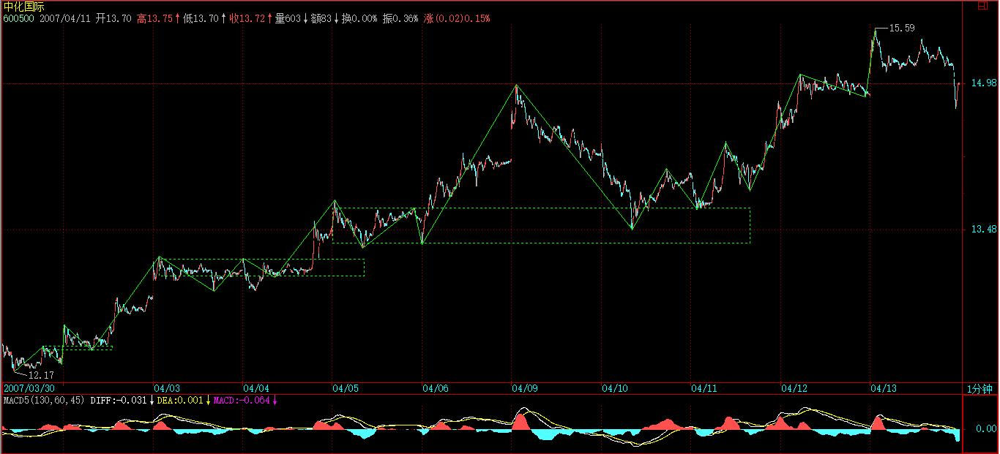
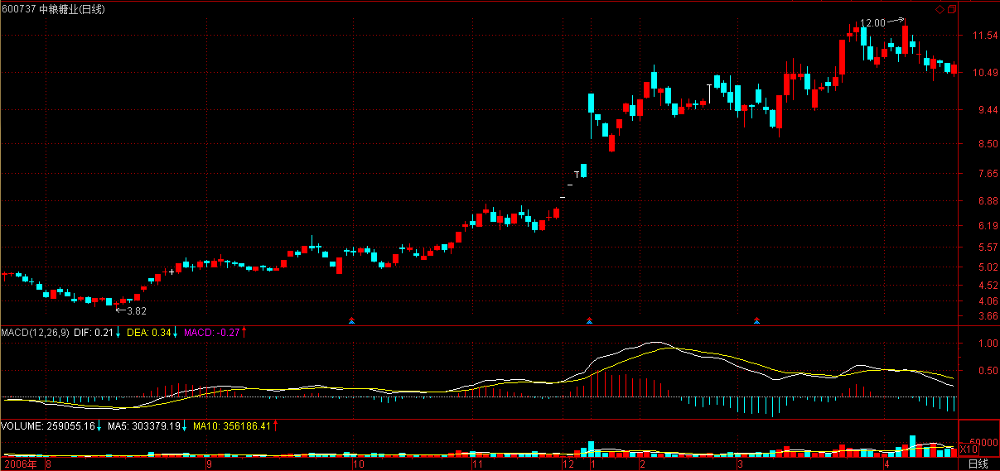

(2007-04-12 15:39:04)
发现很多人都有这样的糊涂概念，以为买入卖出才是股票的操作，是股票操作的所有了。
其实，对于每一笔交易来说，买入卖出，1秒都不用就完成了，更多、更长时间的，填充在买入与卖出之间两种最基本的操作：持股与持币，才是更重要的操作。【韶山映山红】持股与持币，是一种状态，没有动作，所以总是不被看作操作。】
假设你是按30分钟级别操作的，那么，在一个30分钟的买点买入后，就进入一个持股的操作中，根据本ID的理论，你很明确地知道，一个30分钟的卖点必然在前面等着，这卖点宣告从那30分钟买点开始的走势类型的结束。【韶山映山红】每一个走势类型的起点和终点，就是该走势类型的买卖点。一般是第一类买卖点，被小转大结束的走势类型就操作第二类买卖点。】
【韶山映山红】这卖点宣告从那30分钟买点开始的走势类型的结束。为什么不说新的30分钟走势类型结束？从那30分钟买点开始的走势类型可以不是新的30分钟走势类型么？★形成了新的30分钟走势类型，那么，她就总会有一个结束，一个30分钟的卖点必然在前面等着。如果没有形成这个新的30分钟走势类型呢？★107课说的是，趋势背驰的一买之后，次级别反弹就出来，并不等一个三段反弹的30分钟走势类型的形成，那么，这个第一次次级别反弹是什么级别的卖点？★可以做个专题，以后研究。】
在这个卖点到来之前，你就只在持股这唯一的操作里。当这个30分钟的卖点出现时，卖出，然后就进入持币的操作里，直到一个30分钟的买点出现。
持股与持币，归根结底就是一种等待，等待那个被理论绝对保证的买卖点。
所有股票的操作，归根结底，只有两个字：等待。
【韶山映山红】
今年做交易这块，我的确做的不好，净值呈现很清楚。
年初几个月，虽然下手早，但赶了晚集。做估值修复，做垃圾，和我一贯执行的选股偏好上有冲突。
没冲突的几次机会，运气又不贼，阴差阳错没有把握住。这一点可以从今年抓到涨停的次数上看出来。所以，一旦回撤就很被动，患得患失比较多。
不过，交易模式是这样。想开了，也就云淡风轻。好事不能总让我摊上。50那边给力，投机交易这一边压力也就越小。
市场就是这样，一段时间让一种模式赚钱。没轮上，或者没把握住，该承受的就要扛。
见过17年上半年老湿的铁粉应该了解，现在我脾气好多了，怼人也很少，多一事不如少一事。减法做的多，事情也看得淡些。
谈改变是很多余的。没有什么钱可以挣一辈子，慢慢试就好，时间不到就等呗，又不是等不起。
微博上这些年，我一直尽力记录“真实的交易生活该是什么样子”。有时候，我也会回头去看，曾经那些风光和落魄的日子。
但是，人总是要向前看。
如果觉得毫无希望，为什么还要坚守呢？
忘了谁说过，“天赋和努力哪一个更重要？”
回答是，“有天赋更要100%努力不要辜负命运，没天赋早点换个适合自己有天赋的地方”
交易生活，多数时间是“熬”。能熬，也是一种天赋。
】
等待市场的买卖点，和等待彗星的到来不同，后者，可以很精确地知道具体的时间，而市场的买卖点是生长出来的。【韶山映山红】市场的买卖点是生长出来的，没有具体的时间，也不一定有预想的形态结构，所以等待市场的买卖点，并不是傻傻的坐等，而是要持续不断地跟踪、分析。】
买卖点的生长过程，就是一个具体的走势类型的生灭过程。【韶山映山红】走势类型分析的本质，就是走势生住坏灭的分析，最终需要的就是生灭点的判断。什么时候坏了，就该动手了。什么时候灭了，就该离开了。】
这些过程，不妨用一个30分钟第一类买点a开始的30分钟走势类型如何生灭为例子进行说明。【韶山映山红】30分钟第一类买点a之后，走出了新的30分钟走势类型。】
一个30分钟的走势类型，最低标准，就要形成一个30分钟的中枢，一旦这中枢形成，该走势类型随时结束都是符合理论的。【韶山映山红】“最低标准”就是三段次级别重叠构成的一个中枢，也是一个盘整走势，没有次级别进入段和离开段的。换句话说，从多义性分解的角度看，这个中枢的进入段是前一个走势类型的最后一段，这个中枢的离开段是后一个走势类型的第一段。那么，怎么区分这个中枢是一个单独的走势类型，而不是前面走势类型的一部分？★判别方法就是：前一个走势类型是否完成。】
这样，最弱的走势类型，就是该中枢一完成就结束，在该例子里，就是从a点开始，三段重叠的5分钟走势类型结束后，该30分钟走势类型就结束了。【韶山映山红】“最弱的走势类型”，就是三段次级别重叠构成的一个盘整走势。】
用A1、A2、A3来依次代表这三段5分钟走势类型，显然，从a开始的这30分钟走势类型就可以用A1+A2+A3表示。【韶山映山红】这里没考虑30分钟中枢的第三类买卖点的问题。很多时候，这个第三类买卖点并不属于这一个走势类型，而是存在于后面新的走势类型里。】
那么，在实际操作中，如何事先知道，是否真的将形成这种最弱的走势？【韶山映山红】在第三段次级别走势之前的预判，都算事先知道。】
答案是否定的，不仅不可能事先知道是否真的要出现这种最弱的走势类型，而且走势类型的任何可能性都不可能被事先确认，这说明什么？说明预测是毫无意义的，走势是干出来的，是市场合力的结果，【韶山映山红】走势是干出来的，所以很多人就嚷嚷着去干，全然忘记了，是谁干出来的。走势是市场合力的结果，而不是我们这些炮灰干出来的。】而不是被上帝所事先确定的，市场中没有上帝，市场的方向只有所有参与者的合力决定，大资金或高技巧，可以用自己的力量去引导市场，按照自己的剧本来演绎，但没有上帝可以完全事先确定市场走势类型完成的所有细节。【韶山映山红】大资金或高技巧，可以按照自己的剧本，用引导的方式，去操纵市场。★可以做个专题，以后研究。】
那么，如果一切都不可以预测，那本ID理论的意义何在？
一切虽然不可以预测，但一切走势类型的可能结构与类型，却是可以分类的，每一类之间都有着明确的界限，因此，你唯一需要的，就是观察市场当下的走势，让市场去选择可能的结构与类型，然后根据市场的选择来选择。【韶山映山红】完全分类，相应对策。见招拆招。】
注意，这对于大资金来说一样的，无论任何规模的资金，归根结底都只是市场的分力，不是合力本身，企图把自己当合力本身，把自己装扮成上帝的，最终的结局都是死无葬身之地。【韶山映山红】对市场始终要有一颗敬畏之心。】
只要是分力，就要观察市场当下的反应，根据市场反应的当下选择来选择。【韶山映山红】大资金可以操纵的时候就操纵，不能操纵的时候就不能操纵。资金是相对的，操纵也是相对的。】
例如，本ID可以点火二线股，可以把超级大盘股编写在剧本里，但本ID从来就不会觉得自己是上帝在操控市场，本ID不过是在和市场互动，一旦市场某方面的能量被引导耗尽，自然就要选择相反的操作来互动市场，【韶山映山红】某方向的能量被耗尽，就会有相反方向的走势。能量的方向决定市场的方向。】这是一个复杂的当下感应过程，必须最敏锐地察觉市场能量的变动。【韶山映山红】如何描述市场能量的变动？结构动力学，在市场能量描述体系里，是什么位置？★可以做个专题，以后研究。】
当第一个中枢形成后，走势类型可以随时结束，【韶山映山红】第一个中枢形成之前，该级别的走势类型还没有产生，也就不存在“结束”的问题，只有在第一个中枢形成之后，才有这个走势类型的结束可以讨论。】后面的分类比较复杂，今天时间太紧，写不完，在下堂课中将详细论述。
但今天的课程，是一个思维上的关键，必须明确两点：
一、买卖点操作后，等待是一个最关键的过程，必须密切关注相应的走势类型的生长与分类选择，这一切都是当下的。【韶山映山红】这里说“相应的走势类型”，而不是说新的走势类型，因为原来的走势类型依然可能继续生长。买卖点并不能把走势一刀两断。 随着走势的生长与演化，分类也会发生变化，原来是这一种，有可能演化成另一种，所以有分类选择的问题。 本级别走势有4种分类：abc线段盘整，a+A+b盘整，abcde线段类趋势，a+A+b+B+c趋势。不同级别的4种分类可以相互转化。】
二、买卖点本质上是走势类型的生长状况与分类决定的，【韶山映山红】买卖点是依据分类原则，对走势类型当下的判断。】走势类型的生长，会产生买卖点，也会破坏买卖点。】
【韶山映山红】走势类型的分类有4种：abc线段盘整，a+A+b盘整，abcde线段类趋势，a+A+b+B+c趋势。
走势类型的生长状况，是这4种分类的完成过程，以及不同分类之间的转换的过程。
abc线段盘整，可以演化成abcde线段类趋势，或者升级演化成a+A+b盘整。
abcde线段类趋势，可以升级演化成a+A+b盘整。
a+A+b盘整，可以演化成a+A+b+B+c趋势，或者升级演化成更大级别的a+A+b盘整。
a+A+b+B+c趋势，可以升级演化成更大级别的a+A+b盘整。】
反过来，某些买卖点的出现，又使得走势类型的生长状况分类有一个明确的界定，【韶山映山红】走势类型的划分与判断，买卖点是界线的标志。★是如何标志的？可以做个专题，以后研究。】趋势背驰的第一类买卖点界定趋势结束。abc盘整背驰界定。没有第一类买卖点的第二类买卖点界定小转大，第三类买卖点界定盘整的完成。】
这些都是观察市场细节的关键之处。【韶山映山红】走势的演化形成买卖点，有买卖点就标志着走势有变化，没有买卖点的就是原走势的延续。】
（待续）
在一片恐惧与测顶的大师忽悠下，本ID剧本中的深圳1万点，已经在指边。
前几天说了，连深圳1万点都接受不了的管理层，可以回家洗洗睡了。别把管理层看得过高，特别他们的智力，本ID和他们打了十几年的交道，他们是什么水平，心里有数。现在，是考验他们的水平是否有所提高的时候，如果还按以前的水平，那么，这几天，就是他们被汉奸忽悠成功的时候。
当然，本ID 2005年6月曾大肆称赞某山东人确实是山东人，从此，一轮牛市开始，到今天，希望山东人继续要像山东人，梁山可是在那旮旯的，别屁点小事就撑不住。
站在20年大牛市的视角下，深圳这1万点就是屁点的小事，20年的剧本，本ID已经写好，3月19日加息那天开盘前，本ID贴出“神州自有中天日，万国衣冠舞九韶”这文章，从此，这行情走到现在，那就是剧本，当然，中途出现一定调整是正常的，甚至会有周线、月线级别的调整，但大方向是不可改变的。
任何企图阻挡中国崛起的人，最终都只能是历史的笑话，让市场按自己的节奏走，管理层先把自己管好，把随意干预市场的冲动给阳痿掉。市场要调整，也按市场自己的节奏来。
个股就不说什么了，百花齐放、百家争鸣，二线股拉开空间，三线跟上，没什么大不了的。怕的，就半仓；胆子大点的，就看5日线；技术好的，天天都是本ID理论利用震荡的天堂。真正的，从2005年下半年就开始的，如本ID一样的坚定多头，那就继续20年的剧本，把戏一直演到2225年以后再说。【韶山映山红】2025年。】
2007-4-12 15:40
[匿名] 缠心雕龙 2007-04-12 15:43:37
博主好。还一个关于走势力度的问题。因为背驰主要是比较围绕中枢振荡的两段走势之间的力度，而力度目前没有太严格的定义，只是用均线面积或MACD红柱面积辅助，这样实际中还是有少部分情况无法判断。
假设a、b都是围绕中枢的振荡，不考虑a、b内部振荡对力度面积的影响，先把a、b当作直线段看，则“a持续的时间乘以价格变动范围”是否可以当作a的力度看？a、b之间如有连接A，则这个A对a、b力度本身的计算有影响吗？
==
精确定义要用到测度的知识，MACD是一样的，精确的计算公式还是自己编，没多大意义。【韶山映山红】简单的时间和价格范围肯定无法描述力度，所以缠师没有回答这个问题。如果直接看K线图分析力度，至少要加上变化率这一类的分析。MACD也是短期均线和长期均线的分析。】
2007-4-12 15:51
[匿名] 百思不解 2007-04-12 15:45:37
楼主好！
关于39课的同级分解操作流程，如有向上的A2对A0未盘背，其后A2内部小级别背驰引发大级别的A3回调，且A3不破A0高点，其后A4盘背或不创新高，则A4是否卖出？这里的操作似乎和44课“背驰级别小于当下的走势级别”情况下的操作程序很类似。【韶山映山红】A4盘背或不创新高就卖，跟A3是否有小转大的下跌、是否跌破A0高点都没有关系。44课是从更小级别去分析，而同级别分解的机械操作法的假设是看不见更小级别。】
这里（A0-A4）应该还是一个和A0同级的走势吧？因为A3没有跌破前高，则A3可看作向上走势（A0-A4）的新中枢吧？【韶山映山红】A3没有跌破前高，A0-A4就构成了线段类上涨趋势，A3和A1都是线段类中枢。】
==
只要是盘整背驰或不创新高的，都可以先卖出。【韶山映山红】不创新高的，或者创新高但是盘整背驰的，直接卖。创新高而不盘整背驰的，注意小转大。】
当然，是在操作的级别上。
2007-4-12 15:53
[匿名] CCTV 2007-04-12 15:47:10
妹子的理论万岁，3月19日到今天，我已经翻倍还多，000802就挣了50%多，继续学习，永远顶妹子。。
==
关键是长期增长，你能增长20、50年，那才是真正的。
2007-4-12 15:56
[匿名] 替天行房 2007-04-12 15:53:08
老大，是2025，不是2225。
[匿名] 你的样子 2007-04-12 15:53:14
2225年
老大，我们都得悟了道才能熬到吧？
==
新浪这东西没法改，这也没大错，就是直到永远的意思。
2007-4-12 15:57
[匿名] 梁山泊 2007-04-12 15:57:08
楼主说说五粮液有啥内幕啊??????????
==
忘记内幕，只看买卖点。有卖点，天王老子不让你卖也要卖。
2007-4-12 15:59
[匿名] 也许认识你 2007-04-12 15:52:19
博主，上涨中，3个5分盘整构成1个30分中枢
分别是（下上下）＋（上下上）＋（下上下），这9段都是5分级别（1分走势类型），是不是每个盘整都是没有任何延伸的盘整？
第二个（上下上）是不是对应第一个（下上下）中的第二个下，而形成的盘整中枢？
如果第一个盘整中枢这样形成，上涨中，1分以下的下跌（就是直线下跌没有中枢）＋5分的（上下上）＋1分的下跌，3部分构成5分盘整，现在中枢的方向变成（上下上），这个也是上涨中的中枢？
第一个盘整有延伸，那么其余两个盘整是否也要求必须有延伸？
==
概念有点混乱，
如果真是盘整+盘整，那就是中枢延伸或扩展出来的，【韶山映山红】中枢延伸是开始的那个中枢没有结束，延伸够6段的时候升级，升级中枢的次级别就是同级别“盘整+盘整+盘整”来划分组合。中枢扩展是两个中枢的震荡区间有重叠，升级以后的中枢的次级别也是按照同级别“盘整+盘整+盘整”来划分组合。】
除了在同级别分解中可以允许盘整+盘整，其他情况下是不允许的。【韶山映山红】只有在同级别分解中可以允许“盘整+盘整”，其他情况下都不允许这样的组合。至于中枢延伸或扩展中出现的“盘整+盘整”，那是升级后的中枢做局部的内部同级别分解，按照同级别“盘整+盘整+盘整”来划分内部结构。我们分析走势的时候，按照自然的状态，不同的级别、不同的走势类型共存，就没有“盘整+盘整”的划分。】
2007-4-12 16:03
一粒米 2007-04-12 16:03:03
缠MM好！
上海的量今天缩79亿，深圳增20亿。两市昨天共计2415亿，今天共计2355亿，按理本次极限值为2500亿吧，是否不用管理层出手，市场规律很快会起作用？（后市资金流入激减）
==
这地方出现震荡调整都很正常，学习了本ID的理论，应该特别欢迎这种震荡才是。本ID反对的是政策干预。
大牛市，也没必要死拿着，有大级别的卖点，也可以先卖再买。
多头，不是傻多头。是要充分利用震荡降低成本的快乐多头。【韶山映山红】在操作级别上当多头，在小级别做空头打短差。】
2007-4-12 16:06
[匿名] 文科生的忧虑 2007-04-12 16:05:17
妹子；文科生数学不精，悄悄的问一句：ＣＣＴＶ一个月就翻倍了，照这样下去，２０年后市场上一半的钱就都是他的了．罗锅，潜水几个月了，估计也翻了几番了．你的理论如此无敌于天下，弟子又如此聪明能干！要不了１０年，缠家军就把中国股市的钱垄断了．再互相惨杀吗？
==
资金到一定规模后，是不会有这样的速度的，不是任何买点卖点都可以无限制地参与。
大资金的玩法不是这样的，而真正能操作大资金而且能长期保证赢利的，凤毛麟角。
2007-4-12 16:10
[匿名] 百思不解 2007-04-12 15:45:37
楼主好！
关于39课的同级分解操作流程，如有向上的A2对A0未盘背，其后A2内部小级别背驰引发大级别的A3回调，且A3不破A0高点，其后A4盘背或不创新高，则A4是否卖出？这里的操作似乎和44课“背驰级别小于当下的走势级别”情况下的操作程序很类似。
这里（A0-A4）应该还是一个和A0同级的走势吧？因为A3没有跌破前高，则A3可看作向上走势（A0-A4）的新中枢吧？
==
缠中说禅 2007-04-12 15:53:37
只要是盘整背驰或不创新高的，都可以先卖出。当然，是在操作的级别上。
--------
[匿名] 百思不解 2007-04-12 16:09:44
谢谢楼主。后面的问题也帮忙确认下：
这里（A0-A4）应该还是一个和A0同级的走势吧？因为A3没有跌破前高，则A3可看作向上走势（A0-A4）的新中枢吧？【韶山映山红】A3没有跌破前高，A0-A4就构成了线段类上涨趋势，A3和A1都是线段类中枢。然后，A4盘背或不创新高，就会有A5跌破A3形成真正的中枢。】
==
都不对。具体以后课程有。
2007-4-12 16:22
[匿名] 瞎鼓捣 2007-04-12 16:12:11
老大说的对啊，持股最关键。最怕的是盈利抱不住，亏损到是抱的很稳
==
错，不是持股最关键，持币一样关键。
卖点以后，在买点以前，如何能持住币，这同样关键。
2007-4-12 16:23
[匿名] 后知后觉 2007-04-12 16:14:27
感谢禅主的每日一课教诲
或许现在管理层也在重新审视，而且必然重新审视的。
盘面的动作也有微妙变化，从跳水运动洗盘慢慢向平衡木运动转化，最后能做鞍马运动最好了，托马斯全旋，尽量甩掉一些累赘。
走平衡木心态最重要，毕竟3500以上的压力有所显现，所以现在还是心态的问题，当下的心态胜过一切！
帮助：
昨日讨论的那个股票327，你回复是一位数变两位数震荡最正常不过了，
【韶山映山红】600327大东方。】
今日观察，还有人往外跳，但是量已经不是很多了。
经过我愚钝的分析，它该是块肥肉，而且，里边人很多，如果老大有兴趣，能否去挑逗一下？ 您最好踩它一脚，而且不用太大的力气，它自然会弹起来，接下来50％左右的事，就让我们这帮弟子去把握好了。
老大能对它再给些帮助（分析也行）吗？群里很多人都想知道。
谢了。
==
本ID不可能每只股票都是关照。该股中线没什么大问题。
2007-4-12 16:27
[匿名] 新年好 2007-04-12 16:26:16
期待下堂课。
请问缠姐，在等待中是不是可以适当作短差？不过往往把握不住幅度，有的幅度很小，但是看样子又跌不下去，买了是给证券公司打工，不买又怕接下来长上去。如果出现这种情况应该怎么办呢？
==
当然可以，【韶山映山红】在等待中是不是可以适当作短差？当然可以，】但前提是操作有把握，这是一个实践问题，在不熟悉时，可以分批小量操作。
2007-4-12 16:30
[匿名] MACD 2007-04-12 16:21:03
请问缠妹，以前的大牛错过了，现在介入股市晚不晚
==
关键是学好技术，技术好，如果资金又不大，例如可以按30分钟操作，那什么时间都不存在晚的问题。【韶山映山红】小级别的短线永远有机会。】
但如果资金级别必须是至少月线级别的，那是另外的问题了。【韶山映山红】长线已经没有买点了。】
2007-4-12 16:32
[匿名] 小八 2007-04-12 16:31:59
老大，能不能抽时间回答一下小弟的这个问题呀
－－－－－－
老师的３８课中有这段描述：“必然首先出现向上的第一段走势类型，根据其内部结构可以判断其背驰或盘整背驰结束点，先卖出，然后必然有向下的第二段，这里有两种情况：1、不跌破第一段低点，重新买入，2、跌破第一段低点，如果与第一段前的向下段形成盘整背驰，也重新买入，否则继续观望，直到出现新的下跌背驰。在第二段重新买入的情况下，然后出现向上的第三段，相应面临两种情况：1、超过第一段的高点；2、低于第一段的高点。对于第二种情况，一定是先卖出；第一种情况，又分两种情况：1、第三段对第一段发生盘整背驰，这时要卖出；2、第三段对第一段不发生盘整背驰，这时候继续持有。”－－－－－－－－－－
我不解的是在这么几句话里面：１、“不跌破第一段低点，重新买入”（请教，这个不跌破是在次级别或次级别一下级别看吗？或者是说这个“不跌破”怎么来看比较好。有没有可能出现次级别或其以下级别没有出现底背就让这个“跌破”成为不可能的？）；２、“直到出现新的下跌背驰”（请教，这个“新的下跌背驰”是在哪个级别中看的？是本级别吧。还是次级别？）
==
注意，这里说的是同级别分解，第一段是什么级别，后面都是一样的。后面的问题也一样。
2007-4-12 16:34
[匿名] 自然风 2007-04-12 16:30:42
缠师好;能说说钢铁的走势吗?谢谢.
==
本ID在去年底给今年钢铁的定义是，去年的有色，你看看去年有色怎么走就可以。
2007-4-12 16:36
[匿名] 白玉兰 2007-04-12 16:28:33
我好像对股票有感情，不好
==
这是参与市场第一要戒掉的东西。
应该对买卖点有感情。
2007-4-12 16:45
[匿名] 自然风 2007-04-12 16:30:42
缠师好;能说说钢铁的走势吗?谢谢.
==
缠中说禅 2007-04-12 16:36:52
本ID在去年底给今年钢铁的定义是，去年的有色，你看看去年有色怎么走就可以。
--
[匿名] christine 2007-04-12 16:45:20
缠主请教看有色看去年的哪些个有色？有色中表现不一，抱歉了，问这样的问题。
==
钢铁股也表现不一，说的当然是总体方向。
2007-4-12 16:46
[匿名] 新年好 2007-04-12 16:43:10
缠姐，前两天我问你有关s藏药的问题，你一直没回答，今天再问一遍，希望你有空帮我看看。
我是在上月底差不多19的价钱，在以为是30分钟买点的地方买的，谁知道买完又一波下跌。在9号那天本来可以赢利走掉的，但是我没看出来任何背驰，就没走，谁知到现在又连着下跌，几乎回到原来的中枢，这种情况算什么，还有如何把握这种情况？【韶山映山红】600211西藏药业。】
还有上个问题，你也给看看
不过往往把握不住幅度，有的幅度很小，但是看样子又跌不下去，买了是给证券公司打工，不买又怕接下来长上去。如果出现这种情况应该怎么办呢？
==
典型的V型走势，这在大级别中枢震荡中很常见。【韶山映山红】本级别是“V型反转”，大级别是中枢震荡。“V型反转”的顶部如何当下的判断？★以后研究。】
S由于被管理层警告，最近都只能偃旗息鼓，但中线都没问题，只是休息一下。
如果你知道的东西多点，就知道这种通道式上涨的，一旦加速突破通道上轨，往往都会引发大点的调整，看好通道下轨就可以。
2007-4-12 16:51
对不起，5点了，这几天有点忙，要先下，明天见。
2007-4-12 16:53
(2007-04-13 15:31:25)
现在来这里的人，虽然还达不到去孔男人那里的三分之一，但也是越来越多。本ID开这个博客，并不是因为无聊没事干，主要的原因如下：
一，为了让自己写点东西，像解释《论语》这种东西，如果没有这样一天天坚持写下来，是很难完成的。本ID目前也不适宜抛头露脸，资本市场这行业是一个寂寞的行业，只有失去能力才去抛头露脸，就离死不远了。等本ID哪天决定完全离开资本市场第一线时，才会出版了。
二、现在，众声喧哗，皆为贩卖，本ID这里什么都不卖，这里无法可传、无门可入，幻网之中起幻事，密在汝边自珍重。
三、至于说到股票，也是希望各位能自立，本ID将市场那点破事说说，有缘得之。本ID这里，股票是末事，金钱对于本ID来说，10几年前就是末事了，但这点生存的小技巧，如果能被有心者用去，解去一点生存压力，于金钱而自由，在这现实中，也是一条方便之路。
四、现在蠢人太多，中国之崛起，气运在，蠢人多虽不妨大事，但凭空多了点波折，折腾的可是所有的人。最好的办法，就是先把蠢人的蠢行和谎言一一戳穿，大道流行，自有开花结果日。
五、本ID这里有很多CD，有机会和各位分享一下，顺便卖个广告，去本ID的播客多下载，本ID以后上传的空间才大，大家可以听到的音乐就多，本ID对电脑如对面首，不想太深入研究，那播客用着还顺手，就不换了，更不会自己去弄一个私人空间。就像在这里，诸多问题，但本ID是到一地方就不爱挪了。
六、没什么理由，既然已经有了，就继续有下去，就像买点已经买入，现在是持有阶段，卖点出来之前，就继续持有吧。
最后补充几句，本ID这里的东西，不排除有人会拿出去贩卖。现在说股票的人，那些靠收别人钱而活的人，不能便宜了他们。在市场里，有本事就挣市场的钱，注意，所有要收钱的，都一定是市场的失败者，给钱他们，还不如去澳门赌了算了。
自立，不能靠任何人，连本ID都不能依靠。人人是佛，别憋屈自己了。
正如昨天所说，目前是考验管理层智慧的时候，今天的走势很正常，尾盘的下来就更正常了，这种2点45分的跳水走势，又不是第一次了，技术上不难把握。这也是本ID反复强调的，利用技术先卖后买降成本的好机会。
基本面上，所有人对管理层可能的态度有点担心，而且深圳1万点、上海3500的第一攻击目标已经到，进行震荡稳固本就是应该的事情，以退为进是最好的选择。
现在就看管理层的短期态度，20年的牛市，来日方长，本ID从来都反对急功近利。在目前位置展开整固，将有利于大盘以后的走势。
个股依然活跃，但本ID反对乱炒，这已多次说过，这样只会增加汉奸没哭诉的口实，而管理层的智力与经验都有限，最终将损害市场本身。今天有些股票的表现就有点过分了，这样，市场本身也要给予降温，让大家都冷静一下。本ID不愿意看到因为某些人的急功近利，损害都市场所有人的利益。

2007-4-13 15:33
[匿名] 外科医生 2007-04-13 15:37:44
尾盘跳水，把心态搞坏了 原来以为会周一再调整的，600500也看不出背驰结果直线就下来了 呵呵 【韶山映山红】600500 中化国际 。】
==
这是一个典型的1分钟图上小级别转大级别，
【韶山映山红】这一天处于1分钟趋势的向上延伸过程中，开盘拉高有1分钟线段级别的盘整背驰，应该回踩形成1分钟级别的中枢，冲高的时候就应该择机卖出。然后全天震荡。下午拉升不创新高属于二卖。尾盘跳水是小转大的后遗症。】

【韶山映山红】当日次高点15.47和前段相比，没有盘整背驰，小级别背驰导致跌破前高，随后反弹，二卖，然后盘下、跳水。】
2007-4-13 15:41
[匿名] christine 2007-04-13 15:40:27
在目前位置展开整固，将有利于大盘以后的走势。【韶山映山红】这句是缠师原文。】
--
我的理解是该作一下调整了。狂热终需降温的，不然大家都高烧了不好。
==
今天复牌的两只股票这样乱搞是不行的，管理层不降温，本ID也要降温，市场也要降温，让大家清醒清醒。
【韶山映山红】600137浪莎股份。】
【韶山映山红】600515海航基础。】
2007-4-13 15:43
[匿名] 炒汉奸 2007-04-13 15:43:08
缠MM,来首诗庆祝万点吧
==
1万点有什么可庆祝的，市场里没什么可庆祝的，心态要稳，对股票、点位都不要有感情，只看市场的信号。
2007-4-13 15:45
[匿名] 悟禅 2007-04-13 15:45:12
老师所言极是，今天看到了国务院发展研究中心的一份报告，报告预示政府要给股市降温。
==
那级别不够，他们也就写点东西，关键不是他们。
2007-4-13 15:46
[匿名] 马背上的水手 2007-04-13 15:45:45
这么说大家都要等着调整的那个靴子落地？
==
大牛市，不仅仅是考验投资者，更考验管理层，这也是这几天本ID整天说他们的用意。
但今天的市场是活该有问题，那两只复牌的瞎搞，这样不下来冷静一下，是不行的。
2007-4-13 15:52
[匿名] 无限 2007-04-13 15:53:10
你好，缠m，大家也好
今天下午出去办点事，2点半的时候还打了电话查询了一下股票，都不错，挺高兴的。
回家一看，跌成这样，真郁闷
下周一，一开盘，我就打算全清光了
缠m，这种突然的行为，从盘面怎么能看出点先机
==
这很简单，你看一下深圳的1分钟走势图。看1445是什么？【韶山映山红】缠师想表达什么？★★深证成指当日1分钟图。尾盘三买后新高，背驰，然后跳水。背驰不足以解释跳水。14:45的位置表达什么？以后研究。】
【韶山映山红】上证指数当日1分钟图。尾盘没有新高就跳水了。】
【韶山映山红】深证成指5日1分钟线段图。】
【韶山映山红】上证指数5日同期1分钟线段图。】
2007-4-13 15:56
[匿名] 楚狂人 2007-04-13 15:47:57
请问老大认为《四季》最好的版本是那个呢？可以推荐一下吗？
==
本周就放这个。
2007-4-13 15:57
[匿名] 中信海直 2007-04-13 15:56:41
如果技术不太好，是不是下周一就该清仓观望了？？？望mm指点一下
==
技术不好，半仓等待，好象这两天都在说。
2007-4-13 15:58
[匿名] 小菜鸟 2007-04-13 15:58:06
刚学缠论不久，看到第14 15课，其中提到缠中说禅趋势力度：前一“吻”的结束与后一“吻”开始由短线均线与长期均线相交所形成的面积。在前后两个同向趋势中,当缠中说禅趋势力度比上一次缠中说禅趋势力度要弱，就形成“背驰”
但是从缠MM所举的例子里600519的周线第2类买点在日线上的第一类买点其出现的趋势力度并不比之前的同向下的趋势要弱为何是在2004年6月18号产生背弛呢？从MACD上来看的确绿柱子比之前要断但是趋势的面积并不比之前小啊~请教缠姐姐指点！
==
2004年6月18号又没有新低，怎么会有周线背弛？
【韶山映山红】600519贵州茅台。】
要看周线第二买点，要去分析日线甚至30分钟的图。
2007-4-13 16:01
[匿名] 钱少爱好多 2007-04-13 16:00:57
开会完一看，小跳一把。
晕啊，又错过了。。。。。。。
==
注意看盘时间，14、1445。这些都是敏感时间。
2007-4-13 16:02
[匿名] 新浪网友 2007-04-13 16:01:32
缠MM
600191是不是第3类买点？
==
先把级别搞清楚，一个不带级别的买点是不存在的。
【韶山映山红】600191华资实业。】
2007-4-13 16:03
[匿名] 飞 2007-04-13 16:03:02
博主啊!我跑了一半!而且跑早了!早上就跑了.下午还升郁闷!!
==
技术不好的，宁愿卖早，不要卖迟。
2007-4-13 16:04
[匿名] 炒汉奸 2007-04-13 15:56:20
缠MM,又是政策市吗?
是不是又有文件走光给汉奸尾市偷袭的机会了
2月的一次加息也出过这事吧.
估计今天有不少人被套:)
历史当然不会重演
但还是希望看到你对20年前日元升值时日本股市的详细介绍
零散也看过一些,但感觉都不太中立.
==
今天被套是活该，不追高是投资第一要点，有股票就拿着，技术不好就看5日线，好就先卖后买，怎么会套住？买点不是天天都有的。
2007-4-13 16:05
[匿名] 也许认识你 2007-04-13 16:02:08
博主，中枢扩展这一段
5分上涨中的中枢A（下上下），1分甚至以下级别向上离开中枢A，然后5分（下上下，看作中枢B）3段跟中枢A发生扩展，现在是已经完成的30分中枢吗？【韶山映山红】不是。两个裸中枢不足以构成大级别中枢。】根据中枢定义，是不是要等第3个5分走势类型的完成，才可以算是30分中枢完成？
如果第3个5分走势类型，与中枢A的波动没有任何重叠，但是与第中枢B发生扩展，这是30分中枢吗？
按照中枢定义，只有连续3个5分走势类型重叠才是30分中枢。这里应该怎么理解？
==
三个完成的次级别走势类型的重叠，把定义研究清楚。【韶山映山红】中枢的递归定义永远不变。】
一个没有完成的走势类型，是说不好是什么级别的。【韶山映山红】中阴阶段。】
例如一个1分钟的中枢，如果没有完成，震荡出1000个出来，按9个1分钟就是1个30分钟，你说这是什么中枢。所以走势类型，必须等完成了，才能确定其级别。【韶山映山红】中枢出现三买就表示这个中枢在当前级别完成了，但是可能升级成更大级别的中枢，又成为未完成的状态，但是那个未完成是更大级别的了。】
2007-4-13 16:10
星星 2007-04-13 16:08:41
关于盘整中中枢的理解一直有一点问题，请问楼主：
1、盘整应该只有一个中枢，那么是否可以理解为a+A+b，其中a，b段是必须有的吗？必须是次级别的吗？比如30分钟盘整，a，b为5分钟走势，A为30分钟中枢，假定为A1+A2+A3，三段5分钟走势构成的中枢，那么我的问题是，30分钟的盘整走势最少需要几段5分钟走势构成？3段还是5段？
=
你说中枢至少多少次级别构成？
---------
应该是有三段就行。可问题就在这里，比如30分钟级别，一段下跌趋势由于背驰完成了，其后走出了a+A1+A2，都是5分钟走势，那么可以看成是一个30分钟的中枢完成了，但如果以后有走出了a+A1+A2+A3+c，然后出现了一个三买宣告盘整的完成，看楼主以前的一些分析，好像这个盘整的中枢又变成了A1+A2+A3，我在这里很糊涂，请楼主讲一下，谢谢！！
==
三段次级别重叠就形成中枢，后面都是延伸，【韶山映山红】这里就是逗号结束的。99课进一步提出了具体的规则：“划分的原则很明确，就是必须保证中枢的确立，在这前提下，可以根据结合律，使得连接中枢的走势保持最完美的形态。”。】
2007-4-13 16:11
[匿名] 大愚 2007-04-13 15:56:47
LZ好，用MACD判断背弛还有困惑，今天，看到股票第三买点后又创新高，柱子却缩短了，想出，但是看到比前一段次级别的最高点的柱子高，就没有走，结果股价又下来了，一次短差没做成
==
柱子是看面积，不是看缩短，还要看黄白线是否回抽0轴。这些都反复说过，要好好研究。【韶山映山红】缠师分析过一个案例，说的是K线新高而柱子没有新高，判为背驰。这个人反过来用了。判断背驰可以考虑疑罪从有的原则。】
2007-4-13 16:13
各位，在市场中反复磨练，一个能在市场中自如的人，没有什么能打扰了。
如果你的情绪，能让你看不到买卖点，那么什么技术都是没用的，一定要感觉市场的节奏，这样才能降低成本。
大牛市里，筹码是不能丢的，但成本一定要不断下降，这已经反复说了。成本不降，就抗拒不了短线震荡的风险。
技术好的，见到震荡就高兴，成本又可以降下来。否则就是坐电梯，上上下下享受。
好了，周末，本ID要去腐败了，周日回来放“四季”
再见。
2007-4-13 16:19
(2007-04-15 11:38:14)
生命轮回、四季流转，无论中外，莫不如此。因此而有感发，寄之音符间，就有关于四季的音乐。当然，并不是所有关于四季的音乐都是沉重的，生命，并不会因为其本质而承重，本质是虚幻的，本质没有重量，能重量的是生命本身。
在关于四季生命的音乐里，最流行的不外乎两部：维瓦尔第与柴可夫斯基的。前者其实是四部小提琴协奏曲的合集，后者，是一钢琴套曲，更准确的翻译，应该是关于月份的记忆。前者，充满的是地中海的阳光，后者，即使在最阳光的地方，都如同反射着俄罗斯的冰雪。生命的感觉，经常是很地理的。
大概，很少人把这两部作品放在一起，毕竟时代、风格都相差太大。但这里，可以充分感受一下，四季生命不同的地理形态。把这音乐会弄成，还有点周折。维瓦尔第的，本ID一下就找到了，柴可夫斯基的，因为本ID不大喜欢他的音乐，就没有他的全集，所以一时不知道去哪里找。后来想起，本ID有一套《20世纪伟大钢琴家》系列，共收集100位，每位2CD，就去里面找找，结果，还不错，一下就找到了，所以才把这音乐会组织成功。有时候，资料太多也很麻烦，查找起来有点费时。
闲话少说，听音乐吧。
各位中午好，今天有朋友从外地来，还有些应酬，要先下了。
再见。
2007-4-15 11:40
(2007-04-16 15:23:54)
任何具有成熟资本市场的经济体系，都无一例外地主要以股票市值对上市公司与股东财富进行价值衡量。例如，当人们谈论比尔·盖茨或李嘉诚的财富时，就以其拥有的股票市值为基准。
而承认实物资产与虚拟资产在交易原则上的等价性，是市场经济开始摆脱不成熟状态走向成熟的重要标志。
在具有成熟资本市场的经济体系里，证券市场是经济的晴雨表，但在中国证券市场开始的十几年里，证券市场从来就不是经济的晴雨表，这种现象，从未在现实经济的深层逻辑中得到合理解释，都被当成一种中国特色而敷衍过去。而实质上，这只是一个简单而普遍的经济现象，证券市场要成为经济的晴雨表，归根结底，就在于实物资产与虚拟资产在交易原则上的等价关系在现实层面上是否得以确立。
显然，在中国证券市场开始的十几年里，在股权分置的条件下，这种实物资产与虚拟资产在交易原则上的等价关系一直未被确立，而在全流通环境下，这种关系的确立已是不可避免。
由于上述等价关系的不存在，必然导致控股地位的非流通股价值只能以净资产来衡量，非控股地位的流通股价值却以市值来衡量，两种不同的衡量标准，进而导致不同类型股东之间的利益无法协调。
对控股地位的非流通股东来说，通过上市公司大肆进行圈钱、胡乱投资、转移利润、挪用资金等损害其他股东利益的行为所付出的代价极低。而当所有股东利益都统一以市值为衡量后，大股东类似的恶行将得不偿失，这些曾被非流通控股股东广泛采用的行为所能获得的利益，将远抵不上相应行为所导致的市值损失。【韶山映山红】没有人关心“市值损失”，所以才有10年后的宝万之争。】
对于占市场比重最大的国有股，在新的价值衡量关系下，国有资产管理部门对国有上市公司管理人员的绩效考评以及国有资产的价值考核，其核心评判必将从净资产转向市值，国有资产的保值增值也必然转向以市值标准为衡量。对于非国有股，其道理是一样的，在市值标准确立后，所有股东的利益由此得到统一，上市公司的经营也必将转向以股东利益最大化为首要目的。【韶山映山红】“上市公司的经营”“以股东利益最大化为首要目的”依然是遥远的乌托邦的传说。】
而公司质量与其市值的相关度将大为增加，资本市场对资源的有效配置才具有实现的基本前提。好公司的股票就值好价钱，可以顺利在市场中获得足够的低成本融资去完成各类资源的有效配置、重组。以前那种毫无基本面支持就能把坏公司股票炒上天的纯投机行为，因此将变得越来越没价值。
站在纯市场走势的角度，一个长期大牛市进程的延续，必须有占市场绝对力量的长线多头进行实质性支持。【韶山映山红】“占市场绝对力量”、“长线多头”、“实质性支持”。什么样的实质性支持？★以后研究。】
在股权分置时代，实物资产与虚拟资产在交易原则上的等价性不被承认，导致这种长线多头从根本上是不可能存在的，所谓的牛市，只能是各路资金借各类题材的恶炒，所谓的多头，本质上只能是滑头，在股价的波动、消息的利用、题材的挖掘等方面赚取中短线利益。由于不存在真正意义上的长线多头，市场只能在一定范围内不断高低轮回，也就不可能存在真正意义上的大牛市。
而在全流通时代，一旦实物资产与虚拟资产的等价性交易原则被确立，所有上市公司的控股股东就成了真正意义上的长线多头，他们最大的利益，归根结底在于股价的长线上涨，所有有利于支持股价长线上涨的资源都会不断组合到上市公司中来，大牛市真正的、最坚定的多头就此形成。
由于国家实质上是市场中最大的控股股东，因此，国家本质上也必然是长线最大的多头。虽然，因为经济上的某些现象，国家可能会采取一些相应的调控措施，但调控的目的只是为了长线更好，丝毫改变不了国家的长线多头性质。【韶山映山红】“国家的长线多头性质”更多的体现在指数上。至于个股，还要甄别。以后研究。】
从净资产到市值，证券市场才能真正成为经济的晴雨表，成为市场资源配置的最有力武器，所有股东才能最终被统一到创造、提高上市公司价值从而使得所有股东利益最大化的方向上来，市场才能最终形成一批占绝对控制地位的长线多头，进而转化成真正支持大牛市长期运转的核变动力。
从此，唯一能让市场真正走熊的因数，只能是整体经济的严重恶化与衰退，除此之外，一切其他因数所导致的调整，都不会让大牛市的方向有根本改变。【韶山映山红】路漫漫。】
管理层是不能太表扬的，虽然这次上1万，表现得还很山东人，但还是不能表扬。
周末没有任何消息就是最好的消息，所以今天的走势就极为正常了。

那些测定的大师们，如果弄期货，早破产几百次了，所以期货还是不要出来了，免得汉奸都去跳楼。
多次强调，一条5日线就比所有测顶大师要厉害1万倍，连5日线都不破的走势，你还有什么可担心的？当然，如果你技术可以，每天都可以利用震荡来换股、打差价。如果技术不行，就看5日线吧。
至于那些测顶大师，那就继续伸长脖子等大阴线吧，真出大阴线，你们也不敢买，最多就忽悠自己怎么厉害，知道一定会调整，可惜，这些人从2000点、3000点就一直说调整，2月27日也只让你们高兴了一天，你们那天敢买吗？大阴线又和你们有什么关系？
现在空仓的，唯一办法就去反省，看是什么心态造成的。偷心不死，自然有这样的结果。有这么大的头，才带那么大的帽子，顶都给你们测去了，本ID之类的人吃什么？
本周当然会有震荡，这就像说面首都是男的一样没意义，关键是如何通过震荡减低成本，而不是把震荡当成自己预测如何准确的谈资。股票如面首，是用来操作的，不是用来谈论的。
目前，关键还是管理层的态度，只要他们的态度没有明确的打压，那就不会有任何大问题。
操作上，追高就没必要了，空仓的就看着吧，好好反省；其余技术不好的，继续看5日线，技术好的，看好1分钟、5分钟的小背驰做震荡。
2007-4-16 15:25
对不起，马上要外出，有一会议。
晚上9点上来。
再见。
2007-4-16 15:30
对不起，下午有事，刚回来。
2007-4-16 21:05
[匿名] IRONCROSS 2007-04-16 15:33:13
缠禅MM的语气似乎越来越轻松了．跟着你学炒股，真的受益万分，万分感激不为过的．
今天开盘就买入了0912，低市盈率绩优，农业相关，前景广阔，前期调整到位有突破欲望．目前的价位风险很小．这么分析可以吗？我目前还只是看的到５日线的托儿所水平，很惭愧．
【韶山映山红】000912泸天化。】
==
5日线在盘整时用处不大，但在单边中，足以应付最猛烈的情况，会这就足够好了，当然，如果能再进一步，对中枢等有进一步的了解，就可以不用看5日线了。
2007-4-16 21:09
[匿名] 瞎鼓捣 2007-04-16 15:35:04
感觉今天那个一分钟的下跌勉强还能看出来，
回补的位置就毫无征兆了。
我用两秒钟图都看不出来有回补的信号
==
你看看1分钟图，今天在1分钟上就没有背驰过，只是下午有一个很小的1分钟级别下的盘整背驰，这种情况下，就不一定要弄短差，就算弄，也是换股。有时候不能太短，如果你的技术特别好，1分钟以下也是可以操作的，但前提是你能把10:55到13:46这中枢三段能分清楚。【韶山映山红】笔线段初始化就没有这个中枢了。】
2007-4-16 21:17
[匿名] 傻子 2007-04-16 21:16:34
老师好，今天市场不仅没有降温，反而更加火热了，这样好吗，有点担心阿
==
周五尾盘的下跌就是降温，周末没有利空，这就是最大的利好，还有必要降温给空头回补吗？
2007-4-16 21:19
[匿名] AD 2007-04-16 21:15:52
如何判断一个走势类型是次级别的还是次次级别的？
==
日线的次级别是30分钟，次次级别是5分钟，这都是可以事先确认的。【韶山映山红】Ｋ线图的周期，和走势类型的级别，缠师自己也没有好好区分。】
请把前面课程多看几遍。
2007-4-16 21:20
[匿名] 新人 2007-04-16 21:32:14
缠姐这是批评"带头777"吧:
"有这么大的头，才带那么大的帽子，顶都给你们测去了，本ID之类的人吃什么？"
==
"带头777"是谁？【韶山映山红】“带头大哥777”，和缠中说禅差不多是同龄人。草根。当年博客比缠中说禅更火爆无数倍，盖过了徐静蕾的天下第一博客。以“散户的保护神”自居，以预测大盘和个股吸引眼球，开收费QQ群之类的，据说收了几千万。2007年7月被抓，判刑3年。出来后风光不再，努力卖书、卖光盘之类的。这几年好像闹不出什么动静了。】
本ID不针对任何人，也没有任何人值得本ID去专门针对，【韶山映山红】那个时候股神满地走，缠师都是不屑一顾的。】包括孔男人，看他是北大的，给点面子点名骂他，否则他还没资格让本ID骂。
2007-4-16 21:36
[匿名] 黎民 2007-04-16 15:42:01
今天走势太猛,把涨停的上午出了,准备继续做差价,可只下2%不敢接,下午开盘不久又封死了.只能等待.
==
思维要转过来，太猛不是走的理由，该猛不猛，或想猛猛不起来，那才是走的理由。【韶山映山红】“该猛不猛，或想猛猛不起来，”就是背驰的真相。】
2007-4-16 21:39
[匿名] 迷糊 2007-04-16 21:23:19
缠J好，问一个问题，下跌背弛后的第一段反弹走势可以算中枢的第一段吗？
==
为什么不可以？只要不违反结合律，都可以。【韶山映山红】最弱的情况，背驰后有可能只有一个三段盘整走势。】
2007-4-16 21:40
星星 2007-04-13 16:08:41
关于盘整中中枢的理解一直有一点问题，请问楼主：
1、盘整应该只有一个中枢，那么是否可以理解为a+A+b，其中a，b段是必须有的吗？必须是次级别的吗？比如30分钟盘整，a，b为5分钟走势，A为30分钟中枢，假定为A1+A2+A3，三段5分钟走势构成的中枢，那么我的问题是，30分钟的盘整走势最少需要几段5分钟走势构成？3段还是5段？
==
你说中枢至少多少次级别构成？
---------
应该是有三段就行。可问题就在这里，比如30分钟级别，一段下跌趋势由于背驰完成了，其后走出了a+A1+A2，都是5分钟走势，那么可以看成是一个30分钟的中枢完成了，但如果以后有走出了a+A1+A2+A3+c，然后出现了一个三买宣告盘整的完成，看楼主以前的一些分析，好像这个盘整的中枢又变成了A1+A2+A3，我在这里很糊涂，请楼主讲一下，谢谢！！
==
三段次级别重叠就形成中枢，后面都是延伸，
-------
星星 2007-04-16 21:24:34
那为什么对趋势来说,比如a+(A1+A2+A3)+b+(B1+B2+B3)+c,为什么不把a+A1+A2算作是中枢呢,它也是三段次级别重叠的啊,此处甚是糊涂,请楼主仔细讲一下,谢谢!!!
==
好好去看结合律那节。这些问题都说过。【韶山映山红】为什么缠师总是要说去看“结合律”？因为，隐含的最最根本的一句话，缠师没有直接说出来。那就是，中枢的组合不是一成不变的。刚开始的时候，中枢的组合就是a+A1+A2，然后，继续演变，中枢就需要重新划分为a+(A1+A2+A3)。并不是开始哪样，就永远哪样，否则，要结合律干嘛？】
2007-4-16 21:43
[匿名] 乐土 2007-04-16 21:42:14
老师:您好!
今天下午1点半前我减仓一半,但随后的下跌过程中却没出现1分钟低背弛就直接向上不回头了.多头是不是急了些?:) 同时也表明大盘加速上行的可能较大?谢谢!
==
大盘为什么要出现1分钟底背弛才能回头？今天连1分钟的顶背弛都没出现过，只是1分钟级别以下的，下午的跳水，把那中枢第三段给完成了，当然就可以继续上。【韶山映山红】跳水底部的小转大导致的反弹。】

至于大盘加不加速，这属于预测，最好把这习惯给改了。
2007-4-16 21:47
[匿名] 开心 2007-04-16 21:34:58
缠妹，晚上好。有二个问题请教。
问题一：4月11日买入隧道股份，13号停牌公布业绩，在开盘后，以跌停开出，为什么会跌停开盘？怎样判断这类股票的下跌力度？【韶山映山红】600820 隧道股份。】
问题二：今天000739普洛康裕开盘后15分钟内上涨17.82%，最高价为19.88，换手达28.08%后，最终上涨7.06%，收在17.9，请教缠妹在盘中怎样处理这样在没有背弛的情况下的操作。谢谢！【韶山映山红】000739普洛康裕。】
==
级别越小，判断需要的经验与熟练程度越高，所以刚开始学时，别为一些小级别而折腾，这样很容易搞坏心态，如果能把30分钟级别的节奏抓住，这市场95%的人都不是你对手了。【韶山映山红】意思是，因为有小转大的情况存在，所以要有放弃逃顶抄底的掐尖意识，忍受小级别波动所带来的损失。】
至于你说那两个例子，都是分笔级别的问题，看盘口摆单与拉升情况，就能把握，但这需要盘口感觉特别好。后面就是小级别转大级别的问题了。
这事情是很公平的，如果你的技术能精确到分笔级别的，你当然就会比别人走得更好，否则，就按小级别对大级别，那么后面还有很多位置是可以走的，或者说是可以打短差的。【韶山映山红】太小级别的变化看不到，就用稍大级别的结果去倒推，然后用相对策略应对。比如一卖抓不到，就选择二卖操作。】
2007-4-16 21:55
[匿名] 酒吧心情 2007-04-16 21:54:50
JJ， 13:45是不是在5分钟图上也是三分钟买点啊。首先突破上个中枢，4.15 14:15 - 4.16 10:00 ，然后回抽。。。请JJ指教！

==
可以这样看。
后面演化成什么，就看明天开盘了，预测是没必要的，你看着这些中枢是如何形成发展的，对市场就慢慢有感觉了。
2007-4-16 21:57
[匿名] 凡 2007-04-16 21:36:19
老师您好！ 周线上看 用波浪理论 是不是正在运行第5浪？如果是的话走完后 会构成周线级别的背离吗？
==
现在连周线的中枢都没形成过，怎么会有周线的背驰？要背驰也最多是日线的，而且能不能形成还要打个问题，这没必要预测，看市场自己走出来。
本ID这里没有什么子浪，只看中枢的运动。
2007-4-16 21:59
[匿名] 走失的爱犬 2007-04-16 21:12:27
楼主，请帮忙看看600737。请教过你几次了，这个股的日线中枢是不是扩张成周线了。还有没有的搞啊 【韶山映山红】600737中粮屯河。2017-02-17变更为中粮糖业。】

==
主要是原来一些烂事还没完全了结，但问题不大。【韶山映山红】唐家兄弟留下的烂摊子。】
2007-4-16 22:03
[匿名] II 2007-04-16 15:40:08
如果技术不行，就看5日线吧。至于那些测顶大师，那就继续伸长脖子等大阴线吧，真出大阴线，你们也不敢买，最多就忽悠自己怎么厉害，知道一定会调整，可惜，这些人从2000点、3000点就一直说调整，2月27日也只让你们高兴了一天，你们那天敢买吗？
----------
妹妹这话,真是个俏皮的丫头!~~~
我也是死多! 2006年年未加入的死多.
==
不要当死多，要充分利用自己可以把握的级别震荡去减低成本。
死多，最后往往就是上上下下坐电梯，没意义。
2007-4-16 22:07
[匿名] 新浪网友 2007-04-16 21:58:58
老师，能不能在经济评论中说说楼市。记得你以前说过，中国房子没有投资价值，说过楼市要股市化，也说过楼市还要涨，到底是怎么情形呢？
==
楼市不实行双轨制，就解决不了问题。
楼市的黑幕太多，本ID周围的所谓大地产商不少，了解的比较清楚，以后有空再说。
2007-4-16 22:10
[匿名] 诚诚 2007-04-16 22:07:45
缠主:再拜,恳请回答!
晚上好!辛苦了!今天上午我看到600855的5分钟图好象是背弛,下午就抛了,可到尾盘又拿了起来,是不是看错了?还是在次级别又出现了底背弛?恳请解答!谢谢!还有我还能在明后天再买回来吗? 【韶山映山红】600855航天长峰。】
==
有5分钟背驰不错，那不意味着就要跌个没停，13:45在1分钟图上是什么？

至于其他，本ID就不方便回答了。又当裁判又当运动员的事情没意思。
2007-4-16 22:13
[匿名] 也许认识你 2007-4-16 21:46
博主，还是理论上的问题
1、上涨过程，5分上涨走势类型＋5分下跌走势类型＋5分上涨类型，是否构成30分中枢？ 还是上涨必须要求（下上下）走势类型的重叠构成大级别中枢？
2、30分中枢，5分上涨离开，5分下跌不破中枢，为什么这个5分下跌的结束成为买3，作为30分中枢的完成？ 是因为5分上涨＋5分下跌＋将要出现5分上涨或者盘整，构成新的30分中枢？这个新30分中枢宣告前面的30分中枢成为过去？
3、30分中枢的买3，5分上涨离开＋5分下跌，这个5分下跌的中枢是否只能是（上下上）？ 那么这个5分下跌的第一段1分下跌＋（上下上3个一分走势）第一个5分中枢中，第一段1分下跌＋5分中枢的第一个1分上涨＋第二个1分下跌，是不是可以看作5分盘整？
[匿名] 也许认识你 2007-04-16 22:11:14
博主，我好像明白了我的问题是不是也用结合律解决？
买3的下跌中枢，前面3段可以看作盘整，再和后面的1分走势组合，看作下跌？
中枢也是如此结合，次级（上涨＋下跌＋上涨），开始看作中枢，上涨＋（下上下），后面3段结合为中枢？
==
结合律可以让你多角度看问题，综合起来就准确了。
但注意，在同一分解中，不能用不同的结合，这样就乱套了。
2007-4-16 22:15
个股方面，如果从中线的角度，多注意一下那些估计报亏损，或业绩故意不好的股票，这些股票都是有预谋的，先可以不买，但一定要关注，已经有不少股票玩这招数，后面这类股票会越来越多，特别在很多人踏空的情况下，很多人会用这种招数骗筹码。【韶山映山红】可以做个专题。以后研究。】
太晚了，必须下了，再见。
2007-4-16 22:19
(2007-04-17 15:36:26)
昨天本ID贴了“从净资产到市值，大牛市的核变动力”，但今天必须解毒。
所谓解毒，并不是说那文章有什么问题，而是必须要把这现象本身的深层含义给揭示：要资本主义死，就要资本主义亢奋无比，进而精尽人亡。那么，资本主义逐步亢奋的把戏又是什么？
资本市场的建立，就是这资本主义逐步亢奋把戏的最基础部分。资本主义这幻象下，有了货币的幻象，进而有了资本的幻象，再进而有了资本市场的幻象。在一般资本层面的交易原则，都是以所谓的净资产价值为参照系，而有了资本市场，引进一条实物资产与虚拟资产交易的等价性，因此就顺理成章地变成了以资本市场上可交易的价格为基础的交易游戏，这里，一个简单的把戏，就可以蛇吞象般把大量的社会资源吞进一个虚拟的空间里，本质上，最终是一个财富大分配的过程，说一句狠话，当资本主义明目张胆的剥削成为不可能时，这实物资产与虚拟资产交易等价性的交易把戏，就成了资本主义剥削的升级版本。【韶山映山红】从劳动剥削演化成资本剥削。】
而国与国经济层次与阶段的不平衡性，又使得这种虚实间的游戏成为国与国之间经济战争的最直接武器。
一个强大的资本市场，如黑洞般把全球化背景下的世界资源吸纳进来，成为自己的发展动力。一个没有强大资本市场的全球化体系下的经济体，妄想打赢货币战争、金融战争，永远只能是妄想。任何全球化现状下的大国崛起，都是资本大国的崛起，也是强大资本市场的崛起。大国的崛起，就是大国资本市场的崛起，这在现代经济环境下，是无疑的。谁控制了资本市场，本质上就控制了该国的经济血脉与心脏。
反对剥削，往往是在掩盖更深刻的剥削，因为剥削早已经无形化、升级版，任何的反对，从利用社会资源上看，都是在促进剥削本身。资本主义早进化成这样一只魔兽，任何社会资源的交换与利用，都成了促使其更有力量的行为。所有人都在资本的魔性用迷失，所有在资本魔性中沉浮的，都为这资本魔兽提供动力。而那虚实的游戏，同样要席卷一切。
反对资本主义的，最终被资本主义所吞没，就算是死了，其葬礼、也构成其交易，构成其GDP，为资本主义添砖加瓦；反对资本市场的，最终被资本市场吞没，资本市场高效地配置社会的资源，资本市场的采阳大法，只采集其精华，而所有的交易、所有的人，都被其筛选着、吞噬着。
本ID从来不反对这种游戏，因为这游戏必然被游戏，而且是现实地、不可逆转地被游戏着。一个不可掩盖的事实，就是人的可牺牲性是有限度的，如果一个人的生存已普遍不成为问题，希望以人的牺牲为忽悠的所有运动，归根结底都不可能被运动。一切企图用正义、主义、理想等把戏来战胜资本主义的把戏归根结底都是把戏，而一个高度发达的资本主义社会，必然是高度痴呆化的。资本主义的发展程度与人的普遍痴呆程度成正相关，因此，我们有了垃圾商品、流行文化。流行、垃圾，是能产生大量交易的，这就是问题的关键。
从净资产到市值，依然是大牛市的核变动力，本ID依然继续强力折腾资本市场，这虚实的游戏依然成为大国崛起的有力武器，一切不平等、血腥依然不平等、血腥，这就是资本全球化的美丽新世界。
今天，你爽了吗？
这样的震荡，就是本ID理论的天堂，打开1分钟图，看看10:30和13:40分这两个点是什么，如果还看不明白，更重要的是，如果当时还没有反应，那你还需要多学习。
【韶山映山红】10:30是二卖点，开盘的一卖很难有反应，这个二卖要抓住。】
【韶山映山红】13:40是盘整背驰的一买点，因为没有三卖，不足以成为趋势背驰点。】
暂时学不会的，本ID已经给了一个最简单的武器，5日线，当然，这会错过很多短差机会，但比那些测顶大师要厉害多了。【韶山映山红】两个买卖点都是1分钟的笔的级别的，所以缠师说是“短差机会”。】
今天之所以有这样的震荡，其实很简单，因为明天有重要数据公布，但今天有一个更重要的消息，就是以后到香港上市，一定要10亿美金以上，这就充分说明了，目前的管理层依然山东人，这么好的市场，能解决大问题，不充分利用，那真傻了，希望管理层继续山东人下去，但本ID依然不准备表扬他们。当然，今天还有人忽悠到某日报上写文章了，这种破伎俩都要使用，汉奸也真窝囊。
但在最顺利时，也必须谨慎，市场永远是风险市场，股票永远是废纸，任何追高杀跌的行为都是自寻死路。明天的数据影响短期走势，如果数据不好，有大的加息预期，则继续震荡也是很正常的，但大方向是不变的，而且，加息是一件很无聊的事情，如果还用，真有病了。
个股方面，没什么可说的，二线拉开空间三线继续，这早说过了。但必须指出，有些人的操作太乱，如果技术不行，难道持有都办不到？像那14只里的，今天还一大半再创新高，有多少人拿住了？600578、600777、000915这些前面特慢的，还有人有吗？
【韶山映山红】600578京能热电，2013-10-10变更为京能电力。】
【韶山映山红】600777新潮实业。2016-07-06变更为新潮能源。】
【韶山映山红】000915山大华特。】
前面反复强调过不在14只里的那VC股，估计没人拿住了吧？
【韶山映山红】600635大众公用。】
中小板的小盘股，中线如何关注，大概也没有人有耐心了。
注意了，那些股票涨太多没买就算了，本ID是反对任何追高的，昨晚说过，如果有耐心的，可以去选择估计把业绩搞坏的那些股票，如果公布坏业绩反而走好的，就好好看着，特别那些价位不高的，这种手法，并不难发现，找好买点进去就可以。现在，监管时段，本ID也不好说具体的，只能描述一下方向。
2007-4-17 15:38
[匿名] 参禅 2007-04-17 15:45:11
最简单的武器，5日线------记住了。
==
是单边走势，盘整中，用处不大。【韶山映山红】5日线适用于单边走势，盘整中用处不大。】
2007-4-17 15:46
[匿名] 新年好 2007-04-17 15:39:22
今天太感谢缠姐了，让我买了416。【韶山映山红】000416健特生物，生产脑白金。2008-01-06变更为华馨实业，2008-12-30变更为民生投资，2014-04-14变更为民生控股。】
==
416，14只里面第二批，在2、3元就让各位买，有谁能拿到现在？靠涨停板是挣不了大钱的。
2007-4-17 15:48
[匿名] 缠心雕龙 2007-04-17 15:40:42
博主好。
有关背驰的级别问题有些拿不准。a+A+b走势，其中a、b是5f走势，A是30f中枢，若a、b发生盘背，则这个盘背是30f级别的，对吗？这个盘背通常看30f图来判断。
那么，同级分解操作中，若Ai是5f走势，则Ai+2和Ai发生盘背，这个盘背是什么级别的？也是30f级别的吗？这个盘背一般是看30f图判断还是看5f图判断？
==
你事先以什么图为前提，这就涉及预测，是不对的。应该是在什么级别图上看到背弛就是那级别的，【韶山映山红】原文大量的实例都使用Ｋ线图的周期作为走势级别，真正的递归主要在理论中阐述，难怪多数人没有递归概念啊。】当然，一般你说那种情况，都会在30分钟图上看到，但这是两种不同的思维方式。【韶山映山红】缠论的级别都是以中枢的级别为基准的。至于看什么级别的图，反倒无所谓了，哪一种更适合MACD的表达就选哪一种，是根据背驰对比的需要来选择辅助判断工具，而不是根据指标来看是否有什么背驰。】
2007-4-17 15:53
[匿名] 新年好 2007-04-17 15:50:32
10:30和13:40这两个点现在看是很明显，可是前几天都是在10:52那个点的样子就直接拉上去了，谁知道今天又来一波下跌。我就是在10:52左右的时候就回补了，而且还满仓，搞得后来跌了也没钱买了。缠姐如果判断今天这个第二波下跌啊？
==
那些所谓一波就结束的，是构成整个中枢的一部分，性质不同，不能搞混了。【韶山映山红】“构成整个中枢的一部分”，而不是一个完整的中枢，可以用盘整背驰的方法做比较，但不是a+A+b的盘整背驰。】
【韶山映山红】提问者还是没有看明白这一天的走势。10:30那里没有创新高，不存在盘整背驰，而10:52新低了，也同样没有盘整背驰，所以继续跌是完全正常的。反倒是这一天的最低点有一个笔中枢级别的盘整背驰。】
2007-4-17 15:55
[匿名] 百思不解 2007-04-17 15:44:27
楼主好！即使本级按同级分解规则，但次级以下还要实行非同级分解规则，这样非同级分解在实践中无论如何都绕不过去。感觉以前讲的很多内容理解不好，实际上是对非同级分解规则不清楚，难免产生很多误解得离谱的问题。非同级分解原则还应该有很多细节的，也是实践中模糊的地方，影响对走势的解读。还请楼主指教非同级分解的原则。
16课中讲到的反转式、中继式、陷阱式这三类走势组合，能代表所有分解情况吗？
以向上的中继式为例（上涨＋盘整＋上涨），其中的“上涨”一定是趋势吗？上涨的级别可以比盘整的级别低两级以上吗？
==
这在上两节都说了，小级别变大级别如何分解，背弛级别一样的如何分解，都说了，都是从背弛点开始分开。【韶山映山红】(a+A+b+B+c)+C，（a+A+b）+（B+c+C）。】
2007-4-17 16:03
缠中说禅 2007-04-17 15:38:56
今天，你爽了吗？这样的震荡，就是本ID理论的天堂
--------
[匿名] II 2007-04-17 15:57:15
缠MM：
今天，我爽了！~~~现实的人间，理论的天堂！！
上午11：30补一次，下午13：40补一次。
可我想问一下妹妹，分时图怎么来看背驰呐？在公司，只有分时图。
妹妹，如果这样问题能帮我回答，那就解决了我目前最大的困难了。。。
妹妹，你就是我们的天堂：）
==
看1分钟图就可以，如何是1分钟级别以下的，光看柱子面积。
2007-4-17 16:06
[匿名] 新年好 2007-04-17 15:39:22
今天太感谢缠姐了，让我买了416。
==
缠中说禅 2007-04-17 15:48:46
416，14只里面第二批，在2、3元就让各位买，有谁能拿到现在？靠涨停板是挣不了大钱的。
--------
[匿名] 新年好 2007-04-17 16:05:44
缠姐教育的对啊，我就是一直拿不住，关键是总是看背驰卖了，不知道回补，换成别的了，就这样换来换去，一直操作很失误。我以后一定要改掉这个毛病。
还有“前面反复强调过不在14只里的那VC股，”，那位告诉一下是哪只，我不记得了。不是紫光吧？
==
紫光是14只里面的，好象那股票都应该知道，谁是中国目前最大的VC，【韶山映山红】中国最大的VC企业：深圳市创新投资集团有限公司。】谁有是他的股东，显然只有一个答案，大众，当时才5元多，有谁能拿到现在？没买就算了，别追高。【韶山映山红】
【韶山映山红】600635大众公用。】

2007-4-17 16:09
最好别问具体个股的问题，这里耳目众多，本ID说多了，又说本ID操纵什么，不能畅所欲言，干脆都别说了。
2007-4-17 16:11
[匿名] 后知后觉 2007-04-17 16:11:35
禅主：我复制第5遍了：
今天爽了，最近天天都在爽。
“要资本主义死，就要资本主义亢奋无比，进而精尽人亡。那么，资本主义逐步亢奋的把戏又是什么？”这句话用在当前的行情同样适用。 很多股票正在这样走。
市场就像有手一样，而本人愚钝却也清晰的感受到它的脉动，在群里说了3550点注意支撑力度，当它第一次反弹的时候，也告诉了群里同学，注意反弹的方式是否和第一次一样。今天的1分钟走势，有人为的迹象在里边，不过还是可以清晰的看到市场的脉络，毕竟，它起来的方式不一样了。
加息不可怕，虽然无聊，还是会加的，或许循环的加下去，但每次股市都不是在这样的打压中见顶的，还是看市场。在兴奋的时候，没什么能阻止爽，阻止干。关键是什么时候高潮的问题了。
我不猜忌什么，您提到的股票，我提供几个：000802，600198，000598。
最后，提个问题，禅主，帮助分析一下000616，它要增发，管理层给否了。帮我分析一下。
谢了！
【韶山映山红】000616亿城股份，2014-04-11变更为亿城投资。2015-02-06变更为海航投资。】

==
看走势，走势反应一切。
你觉得这样的走势会有问题？
2007-4-17 16:14
[匿名] 黄土高坡的白杨 2007-04-17 16:18:26
博主，我是缠论初学者。特请教：
600607上实医药在日线上3月1日到3月13日形成日线中枢，之后中枢延伸，4月11日突破该中枢，目前如果30分钟回试不跌破14.82，则形成日线第3类买点。对吗？谢谢！
【韶山映山红】600607上实医药，2010年2月3日被上海医药601607吸收合并。】

==
不对
2007-4-17 16:24
[匿名] 启程 2007-04-17 16:22:34
再问缠师一个问题，喜欢邮票吗？邮市健康吗？
==
不要当上帝，上帝才考虑所谓的健康问题。市场就是市场，与健康无关。
2007-4-17 16:26
对不起，4点半了，要下，晚上还有很多事情。
再见。
2007-4-17 16:32
本课目录
教你炒股票45：持股与持币，两种最基本的操作。今天扯点闲话。周末音乐会34：能重量的四季生命从净资产到市值，大牛市的核变动力《货币战争和人民币战略》续五：从净资产到市值，资本血腥游戏的必然之路